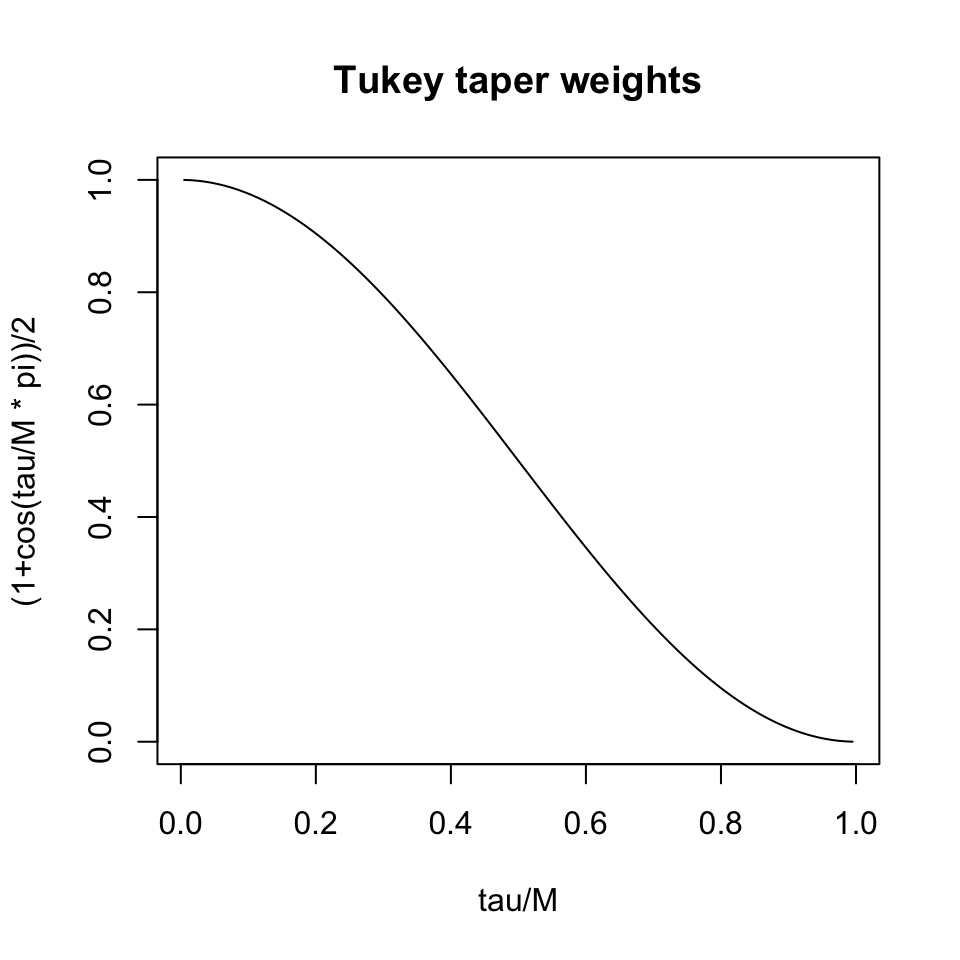
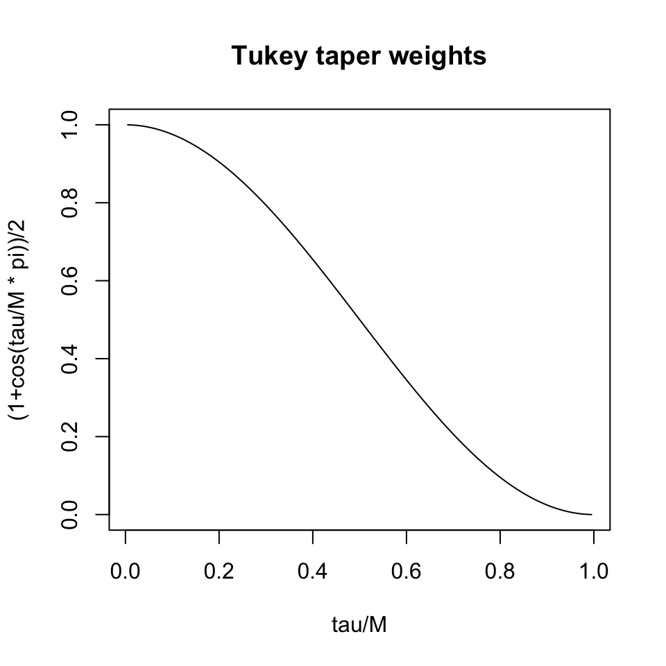
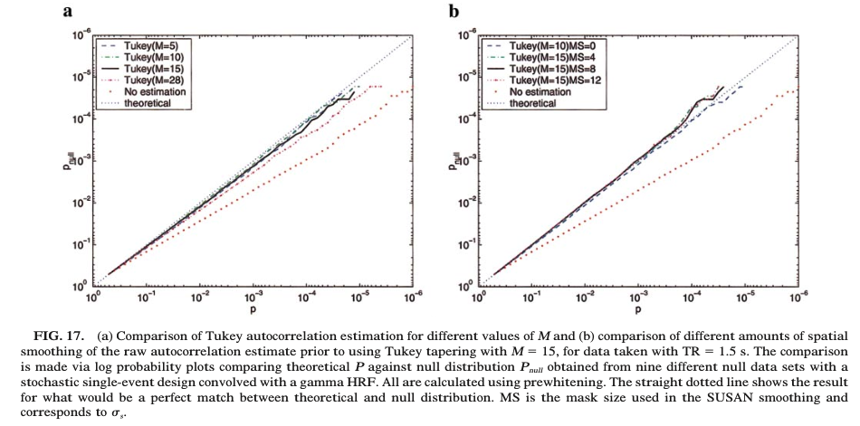

y(v) = X\beta(v) + \varepsilon(v)
Naive analysis:
What is the expected value of the least squares estimator? \mathbb{E}(\hat \beta) = What is the variance of the least squares estimator? \mathrm{Var}(\hat \beta) =
Given:
y = X\beta + \varepsilon, \quad \mathrm{Var}(\varepsilon) = \sigma^2V
Let K be a square root matrix of V such that:
K V K^T = I
K y = K X \beta + K \varepsilon
r_{xx}(\tau) = \frac{1}{\hat\sigma} \sum_{t=1}^{N-\tau} x(t) x(t+\tau)/(N-\tau)
\hat\rho_{xx}(\tau) = \frac{1}{2}\left( 1 + \cos\left(\frac{\pi \tau}{M}\right) \right) r_{xx}(\tau)
for \tau<M and zero otherwise.

Others not discussed here (see Woolrich et al., 2001)
Matrix V can be filled in with these empirical estimators as a Toeplitz matrix
If \beta is known, the formulas are computed with \epsilon = y - X\beta
Alternatively, we could use \hat\beta, giving the residuals r = (I- X(X^T X)^{-1} X^T) y
What is the autocorrelation of the residuals?
\mathrm{Cov}(r) =
\hat{\beta}_1 = (X^T \hat V^{-1} X)^{-1} X^T \hat V^{-1} y
t = \frac{c^T \hat{\beta}}{\hat{\sigma} \sqrt{c^T (X^T \hat V^{-1} X)^{-1} c}}
and should be approximately normally distributed under the null, in large samples.

# path to fsf file for preprocessing for first participant
# /Users/vandeks/Library/CloudStorage/Box-Box/SMN/data/RBC/HBN_BIDS/sub-NDARAA306NT2/ses-HBNsiteRU/func/sub-NDARAA306NT2_ses-HBNsiteRU_task-movieDM_bold.feat/design.fsf
TR = 0.8
pos = rle(dm$positive)
pos$lengths[1] = (pos$lengths[1] - 6)
# first one starts at zero
pos$starts = c(0, cumsum(pos$lengths)[-length(pos$lengths)]+1)
# output needed by FSL
threeCol = data.frame(onset=pos$starts*TR, duration=pos$lengths*TR, value=pos$values)
write.table(threeCol[threeCol$value==1,], row.name=FALSE, sep=' ', col.names = FALSE, file='../data/RBC/stimulusTimeSeries/despicableMe/positiveStimulus.txt')
# /Users/vandeks/Library/CloudStorage/Box-Box/SMN/data//RBC/stimulusTimeSeries/despicableMe/positiveStimulus.txtCreate a similar stimulus time series for the negative emotional blocks
Design matrix
A lot of this preprocessing occurs in a regression framework
References Ciric et al., 2017 Parkes et al. 2018
aCompCor – Anatomical Component Correlation
“Dummy”/“One hot” coding of scans where participant move a lot
In the end, the preprocessing regression design matrix for rs-fMRI might look something like
\begin{bmatrix} \vert & \vert & \vert& \vert \\ \text{Temp filt} & \text{Motion} & \text{aCompCor} & \text{Dummy variables} \\ \vert & \vert & \vert & \vert \end{bmatrix}
Whitfield-Gabrieli 2012
\hat \rho(v,w) = \frac{\sum_{t=1}^T R(v, t) R(w, t)}{\sqrt{\sum_{t=1}^T R(v, t) ^2 \times \sum_{t=1}^T R(w, t)^2 } } * Correlations are Fisher Z-transformed so that they are approximately normal
Z(v,w) = \mathrm{atanh}(\hat \rho(v,w))
Whitfield-Gabrieli 2012